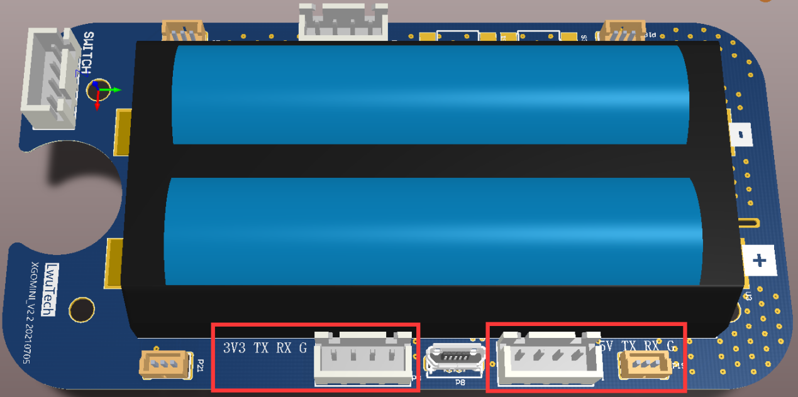
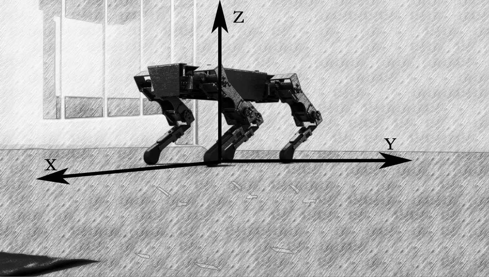
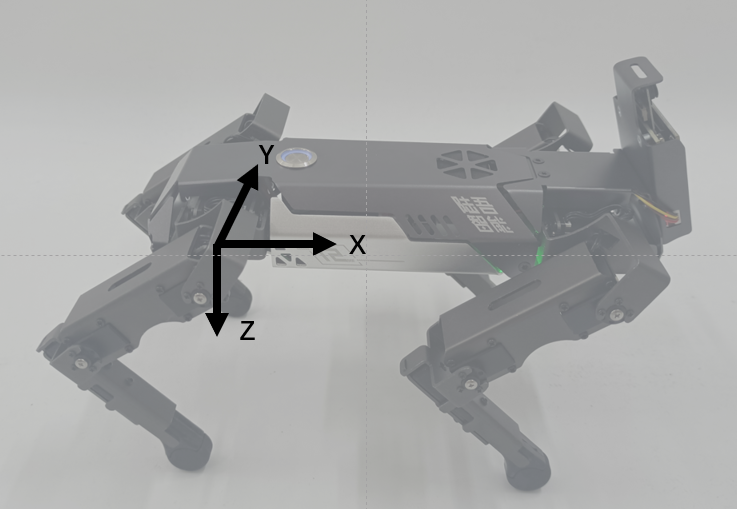

XGO mini
什么是XGO mini
新手上路
常见问题
串口通信协议
版本： V1.0
发布日期： 2021/08/05
| 日期 | 原因 | 作者 |
|---|---|---|
| 2021/08/05 | 创建文档、发布文档 | 林涛 |
前言
本文档适用于 XGO产品上位机与机器狗之间命令/数据交互的通信协议,采用标准TTL串行通讯，XH2.54 4PIN接口连接。
背景知识
XGO-Mini是一款12自由度桌面级机器狗，可以实现全向移动，六维姿态控制，姿态稳定，多种运动步态，内部搭载了9轴的IMU，关节位置传感和电流传感器反馈自身姿态和关节转角与力矩，用于内部算法和二次开发。
用六角螺丝到拧下背部两颗螺丝，左右两侧螺丝，尾部两颗螺丝后，拆除机器狗后背板，注意小心拔掉电源线。
如下图所示主板一侧有两个串口通信接口，按主板丝印线序和上位机线序对接即可以开始调试。两个端子对外供电电压分别是5V和3.3V，但不可同时使用。
默认情况下3.3V端子被AI模块占用，如果想用其他设备进通讯，请将AI模组端子拔下。

软件接口
通讯采用固定格式：字头+信息+字尾。
标准TTL串行通讯：
| 波特率 | 115200 |
| 数据位 | 8 |
| 停止位 | 1 |
| 奇偶校验位 | 无 |
1.通信格式
| 长度(Length) | Message | 校验和(CheckSum) | ||||
|---|---|---|---|---|---|---|
| 0x55 | 0x00 | 0x00 | 0xAA | |||
| 整个数据包所占字节数 | 具体数据 | 判断数据是否正确 | ||||
字头：固定格式
长度：数据包长度=字头占位[2]+长度占位[1]+Data占位[x]+校验和占位[1]+字尾占用[2]=6+x
Message：详见 指令
校验和：CheckSum = ~(Length+Message)若括号内的计算和超过255，则取最低的一个字节，然后取反
字尾：固定格式
TIPS：本机接收指令时，如果长度或校验和出错，则认为数据出错，会自动丢弃该数据包。
2.指令
2.1.写指令，无应答 (0x00)
| 长度(Length) | 指令类型 | 首地址 | 数据 | 校验和(CheckSum) | ||||
|---|---|---|---|---|---|---|---|---|
| 0x55 | 0x00 | 0x00 | 0xAA | |||||
| 0x00 | data1,data2... | |||||||
指令：0x00，向内存表连续写入一定字节的数据，不会产生应答
首地址：数据包写入的首地址（详见协议内存表）
数据：连续写入的数据
例：设置机器人最大速度向前运动
0x55 0x00 0x09 0x00 0x30 0xFF 0xC7 0x00 0xAA
字头：0x55 0x00
Length：0x09，数据包共9个字节
Message：0x00无应答写指令，0x30前后移动速度寄存器地址，0xff设置最大速度
CheckSum：0x09+0x00+0x30+0xFF=0x138，取最低字节0x38，取反得0xC7
字尾：0x00 0xAA
2.2.读指令 (0x02)
| 长度(Length) | 指令 | 首地址 | 字节数 | 校验和(CheckSum) | ||||
|---|---|---|---|---|---|---|---|---|
| 0x55 | 0x00 | 0x00 | 0xAA | |||||
| 0x09 | 0x02 | |||||||
指令：0x02，读取内存表中一段连续的字节
首地址：数据包读取的首地址（详见协议内存表）
字节数：连续读取的字节长度
返回数据包格式：
| 长度(Length) | 应答符 | 首地址 | 数据 | 校验和(CheckSum) | ||||
|---|---|---|---|---|---|---|---|---|
| 0x55 | 0x00 | 0x00 | 0xAA | |||||
| 0x12 | ||||||||
应答符：0x12，表明该数据包为读取指令的应答包
首地址：读取指令数据包中的首地址
数据：读取到的数据，长度为相应读取指令要求字节长度
例：读取12个舵机的位置
0x55 0x00 0x09 0x02 0x50 0x0C 0x98 0x00 0xAA
字头：0x55 0x00
Length：0x09，数据包共9个字节
Message：0x02读指令，0x50舵机ID为11位置寄存器地址，0x0C，连续读取12个字节
CheckSum：0x09+0x02+0x50+0x0C=0x67，取反得0x98
字尾：0x00 0xAA
读取返回数据包：
0x55 0x00 0x14 0x12 0x50 0x80 0x80 0x80 0x80 0x80 0x80 0x80 0x80 0x80 0x80 0x80 0x80 0x89 0x00 0xAA
字头：0x55 0x00
Length：0x14，数据包共20个字节
Message：0x12应答符，0x50首地址与相应读取指令一致，0x80共12个，对应12个连续寄存器地址
CheckSum：0x14+0x12+0x50+0x80*12(d)=0x676，取最低字节0x76，取反得0x89
字尾：0x00 0xAA
3.机器人坐标系


下面为XGO内存表
备注：调试模式、整机模式、单腿模式、舵机模式（优先级递减）：当尝试写入这四种模式下的任一寄存器以改变其中数据时，机器人将会默认进入该模式，而另三种模式下的寄存器数据不起作用。默认整机模式。